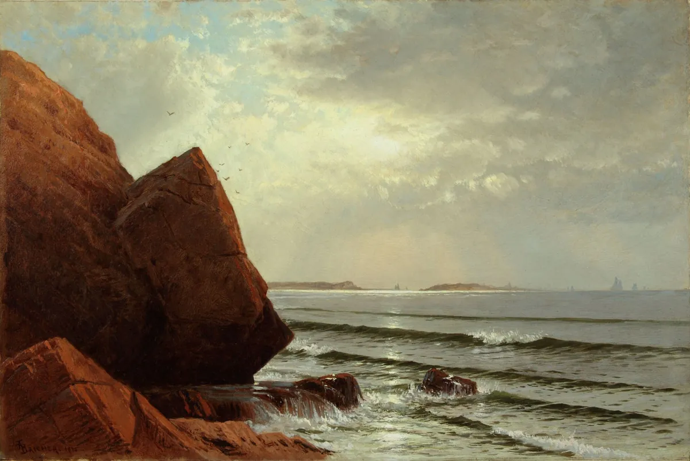

Hunt & Bricher
Morning, Cape Ann
Alfred Thompson Bricher, 1875

- Medium
- Oil on canvas
- Collection
- High Museum of Art, Atlanta
- Accession no.
- 2010.109
- Record checked
- Page-verified
- Image rights
- Public-domain image
Source · note 50 Alfred Thompson Bricher, Morning, Cape Ann, 1875, oil on canvas, High Museum of Art, Atlanta, 2010.109, Gift of the West Foundation in honor of Gudmund Vigtel, accessed November 2026, https://high.org/collection/morning-cape-ann/.